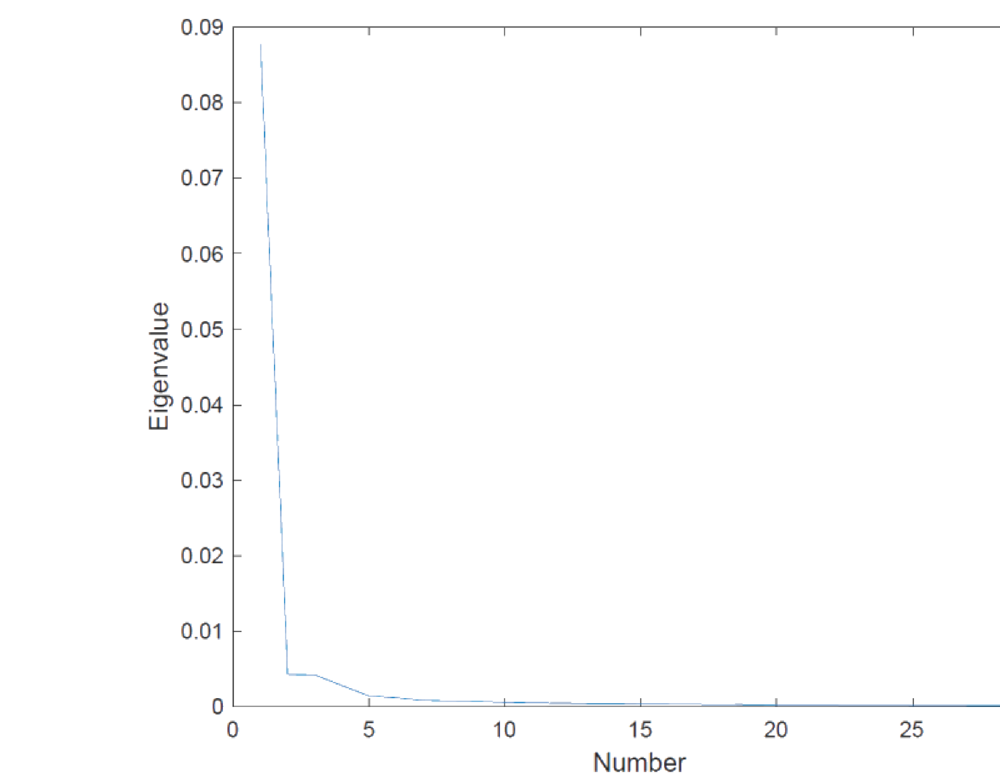
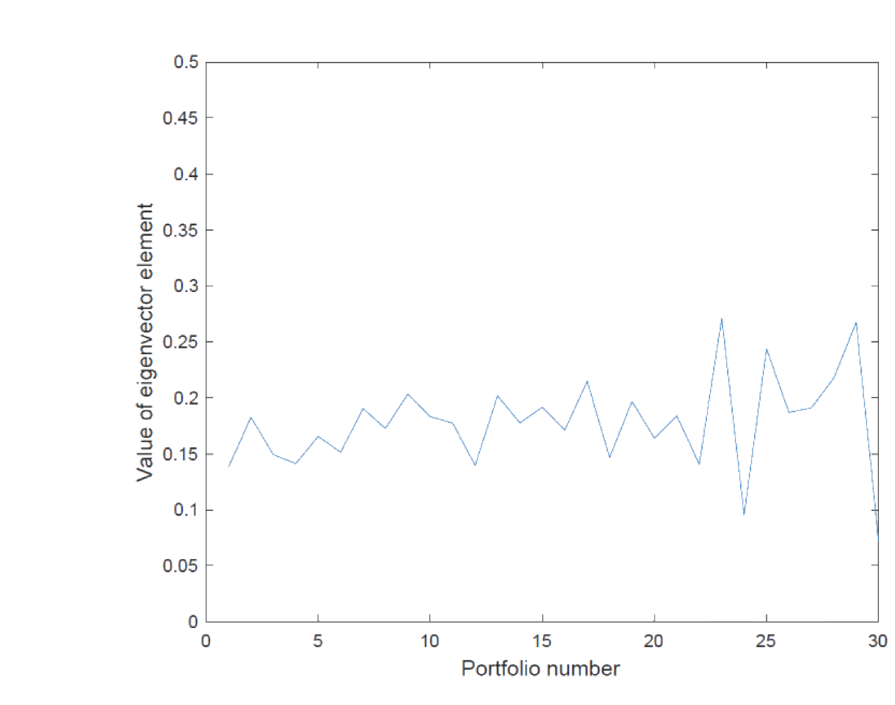
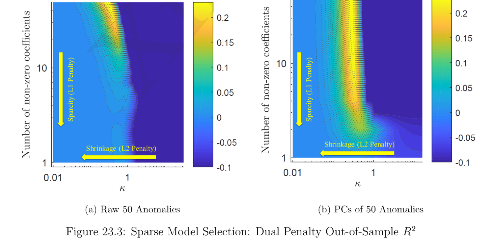

23. Stochastic Discount Factor Extraction
本章在理性预期下从数据中反解 SDF，核心难题是降维：直接用 \(N\) 个收益率构造 SDF 会得到 \(N\) 个因子，样本外表现极差。逐级降维：(1) 无降维（§23.1，用全部 \(N\) 个收益率，含/不含无风险资产/超额收益三种写法 23.1/23.2/23.6）；(2) 特征降维（§23.2，Kozak/Kelly 的特征矩阵 \(\mathbf X_t\) 把 \(N\) 维降到 \(J\) 维，关键假设 \(\mathbb E[\mathbf z\mid\mathbf X]=\mathbf X\boldsymbol\phi\)，因子即截面 GLS 回归系数，并与 Fama-MacBeth 比较）；(3) PCA 降维（§23.3，Kozak et al. 2018：特征向量构造正交因子，利用无近似套利证明小特征值的 PC 因子可丢弃，把 SDF 降到 \(K\approx5\) 个因子，并联系 APT）；(4) IPCA（§23.4，Kelly et al. 2019：\(\boldsymbol\beta_t=\mathbf X_t\boldsymbol\Gamma\) 把特征与 PCA 结合，等价于对管理组合做 PCA）；(5) 收缩估计防过拟合（§23.5，Kozak et al. 2020：岭惩罚 = 高斯先验、lasso 惩罚 = Laplace 先验、二者合为弹性网，把小特征值因子收缩到零）。
This chapter extracts the SDF from data under rational expectation, the core difficulty being dimension reduction: building the SDF directly from \(N\) returns yields \(N\) factors with terrible out-of-sample performance. Progressive reduction: (1) no reduction (§23.1, using all \(N\) returns; with/without risk-free / with excess returns, 23.1/23.2/23.6); (2) characteristic-based reduction (§23.2, the characteristic matrix \(\mathbf X_t\) of Kozak/Kelly cuts \(N\) down to \(J\), under the crucial assumption \(\mathbb E[\mathbf z\mid\mathbf X]=\mathbf X\boldsymbol\phi\); factors are cross-sectional GLS regression coefficients, compared with Fama-MacBeth); (3) PCA reduction (§23.3, Kozak et al. 2018: eigenvectors build orthogonal factors, and absence of near arbitrage lets us drop low-eigenvalue PC factors, reducing the SDF to \(K\approx5\) factors; linked to APT); (4) IPCA (§23.4, Kelly et al. 2019: \(\boldsymbol\beta_t=\mathbf X_t\boldsymbol\Gamma\) marries characteristics with PCA, equivalent to PCA on managed portfolios); (5) shrinkage against overfitting (§23.5, Kozak et al. 2020: ridge penalty = Gaussian prior, lasso penalty = Laplace prior, together elastic net, shrinking low-eigenvalue factors to zero).
23.1 No Dimension Reduction
由定理 4.2，在 Portfolio Formation & Law of One Price 下存在唯一 SDF \(M_{t+1}\in\mathcal X_{t+1}\)，其中 \(\mathbf x_{t+1}=(x_{1,t+1},\dots,x_{N,t+1})'\) 是 \(N\) 个随机支付，\(\mathcal X_{t+1}\) 是其线性张成空间。
23.1.1 Extraction without Risk-Free Payoff
定理 4.2 给出无无风险资产时的唯一 SDF \(m_{t+1}=\mathbf x_{t+1}'\mathbb E[\mathbf x_{t+1}\mathbf x_{t+1}']^{-1}\mathbf p(\mathbf x_{t+1})\)。把支付按价格归一化为毛收益 \(\mathbf R_{t+1}\)（\(\mathbf p(\mathbf R_{t+1})=\mathbf 1\)），得 (23.1)：
By Theorem 4.2, under Portfolio Formation & the Law of One Price there is a unique SDF \(M_{t+1}\in\mathcal X_{t+1}\), where \(\mathbf x_{t+1}=(x_{1,t+1},\dots,x_{N,t+1})'\) are \(N\) random payoffs and \(\mathcal X_{t+1}\) their linear span.
23.1.1 Extraction without Risk-Free Payoff
Theorem 4.2 gives the unique SDF without a risk-free asset, \(m_{t+1}=\mathbf x_{t+1}'\mathbb E[\mathbf x_{t+1}\mathbf x_{t+1}']^{-1}\mathbf p(\mathbf x_{t+1})\). Normalizing payoffs by their prices into gross returns \(\mathbf R_{t+1}\) (\(\mathbf p(\mathbf R_{t+1})=\mathbf 1\)) gives (23.1):
$$m_{t+1}=\mathbf R_{t+1}'\,\mathbb E\!\left[\mathbf R_{t+1}\mathbf R_{t+1}'\right]^{-1}\mathbf 1_{N\times1}\tag{23.1}$$
可由样本估计，但因用 \(N\) 个收益率本身构造 SDF，因子维度高达 \(N\)，样本外表现可能很差。
23.1.2 Extraction with Risk-Free Payoff
定理 5.1 给出有无风险资产时的唯一 SDF。归一化后整理为 (23.2)：
This is estimable, but since we use the \(N\) returns themselves to build the SDF, the factor dimension is as high as \(N\) and out-of-sample performance may be poor.
23.1.2 Extraction with Risk-Free Payoff
Theorem 5.1 gives the unique SDF with a risk-free asset. After normalization it rearranges to (23.2):
$$m_{t+1}=\frac1{R_f}-\frac1{R_f}\left(\boldsymbol\mu_{t+1}-R_f\mathbf 1_{N\times1}\right)'\boldsymbol\Sigma_{\mathbf R_{t+1}}^{-1}\left(\mathbf R_{t+1}-\boldsymbol\mu_{t+1}\right)\tag{23.2}$$
其中 \(R_f\) 是无风险毛收益，\(\boldsymbol\Sigma_{\mathbf R_{t+1}}\) 是 \(N\) 个风险支付的方差-协方差矩阵。由命题 5.2，SDF 是均值-方差前沿切点组合毛收益的线性函数。仍是 \(N\) 个因子，样本外表现可能差。
23.1.3 Extraction with Excess Return
回忆超额收益空间 (5.33)，加时间下标即 (23.3)/(23.4)：\(\mathcal Z_{t+1}=\{z_{t+1}\in\mathcal X_{t+1}:p(z_{t+1})=0\}\)，由 \(\mathbf z_{t+1}=\mathbf R_{t+1}-R_f\mathbf 1\) 张成。把 (23.2) 的 SDF 作用于 \(\mathbf z_{t+1}\) (23.5)：
where \(R_f\) is the risk-free gross return and \(\boldsymbol\Sigma_{\mathbf R_{t+1}}\) the variance-covariance matrix of the \(N\) risky payoffs. By Proposition 5.2, the SDF is a linear function of the mean-variance frontier tangency portfolio gross return. Still \(N\) factors, possibly poor out-of-sample.
23.1.3 Extraction with Excess Return
Recall the excess return space (5.33), with time subscript (23.3)/(23.4): \(\mathcal Z_{t+1}=\{z_{t+1}\in\mathcal X_{t+1}:p(z_{t+1})=0\}\), spanned by \(\mathbf z_{t+1}=\mathbf R_{t+1}-R_f\mathbf 1\). Apply the SDF (23.2) to \(\mathbf z_{t+1}\) (23.5):
$$\mathbb E[m_{t+1}\mathbf z_{t+1}]=\mathbb E[m_{t+1}(\mathbf R_{t+1}-R_f\mathbf 1)]=\mathbf 1-\frac1{R_f}R_f\mathbf 1=\mathbf 0\tag{23.5}$$
这说明对超额收益定价时缩放无关：任何 \(m^\star_{t+1}=\alpha m_{t+1}\)（\(\alpha\) 常数）都能给 \(\mathbf z_{t+1}\) 及任意超额收益定价。于是用 \(m^\star_{t+1}\equiv m_{t+1}R_f\) 改写 (23.2) 得 (23.6)：
This shows scaling is irrelevant for pricing excess returns: any \(m^\star_{t+1}=\alpha m_{t+1}\) (\(\alpha\) constant) still prices \(\mathbf z_{t+1}\) and any excess returns. So rewrite (23.2) with \(m^\star_{t+1}\equiv m_{t+1}R_f\) to get (23.6):
$$m^\star_{t+1}=1-\boldsymbol\mu_z'\boldsymbol\Sigma_{\mathbf R_{t+1}}^{-1}\left(\mathbf z_{t+1}-\boldsymbol\mu_z\right)\tag{23.6}$$
其中 \(\boldsymbol\mu_z=\mathbb E[\mathbf R_{t+1}-R_f\mathbf 1]\)。仍因用 \(N\) 个收益率构造 SDF 而维度为 \(N\)，样本外表现可能差。
where \(\boldsymbol\mu_z=\mathbb E[\mathbf R_{t+1}-R_f\mathbf 1]\). Still \(N\)-dimensional since we use the \(N\) returns to build the SDF, so out-of-sample performance may be bad.
23.2 Dimension Reduction with Characteristics-Based Factors
23.2.1 Characteristic Matrix
自然地假设股票收益矩与公司特征相关，用此把 \(N\) 个因子降到 \(J\) 个特征。设 \(N\times J\) 特征矩阵 \(\mathbf X_t\)：\(N\) 行对应 \(N\) 家公司，每行对应该公司的特征（如规模、账面市值比、盈利能力等），含常数列（一列全 1），\(J\le N\)。(23.6) 的条件版 (23.7)：
Naturally, assume stock return moments are functions of firm characteristics, and use this to reduce the \(N\) factors to \(J\) characteristics. Let the \(N\times J\) characteristic matrix \(\mathbf X_t\) have \(N\) rows for \(N\) firms, each row a firm's characteristics (size, book-to-market, profitability, etc.), including a constant column (a column of ones), with \(J\le N\). The conditional version of (23.6) is (23.7):
$$m^\star_{t+1}=1-\boldsymbol\mu_{z,t}'\boldsymbol\Sigma_t^{-1}\left(\mathbf z_{t+1}-\boldsymbol\mu_{z,t}\right)\tag{23.7}$$
其中 \(\boldsymbol\mu_{z,t}=\mathbb E[\mathbf z_{t+1}\mid\mathbf X_t]\)，\(\boldsymbol\Sigma_t\) 是 \(\mathbf R_{t+1}\) 的条件方差-协方差矩阵，且 \(\mathbb E[(\mathbf z_{t+1}-\boldsymbol\mu_{z,t})(\mathbf z_{t+1}-\boldsymbol\mu_{z,t})']=\boldsymbol\Sigma_t\) (23.8)。
关键假设 (23.9)：
where \(\boldsymbol\mu_{z,t}=\mathbb E[\mathbf z_{t+1}\mid\mathbf X_t]\), \(\boldsymbol\Sigma_t\) is the conditional variance-covariance matrix of \(\mathbf R_{t+1}\), and \(\mathbb E[(\mathbf z_{t+1}-\boldsymbol\mu_{z,t})(\mathbf z_{t+1}-\boldsymbol\mu_{z,t})']=\boldsymbol\Sigma_t\) (23.8).
Crucial assumption (23.9):
$$\underbrace{\mathbb E\!\left[\mathbf z_{t+1}\mid\mathbf X_t\right]}_{=\boldsymbol\mu_{z,t}}=\mathbf X_t\boldsymbol\phi\tag{23.9}$$
\(\boldsymbol\phi\) 是 \(J\times1\) 向量。线性形式相当一般：不妨碍把特征的非线性函数作为 \(J\) 个特征之一，\(\mathbf X_t\) 也可含时间序列预测变量。代入 (23.7)，条件 SDF 变为 (23.10)：
\(\boldsymbol\phi\) is a \(J\times1\) vector. The linear form is quite general: it doesn't stop us from including nonlinear functions of characteristics as one of the \(J\) characteristics, and \(\mathbf X_t\) may include time-series predictors. Plugging into (23.7), the conditional SDF becomes (23.10):
$$m^\star_{t+1}=1-\boldsymbol\phi'\underbrace{\mathbf X_t'\boldsymbol\Sigma_t^{-1}}_{=\mathbf W_t}\left(\mathbf z_{t+1}-\boldsymbol\mu_{z,t}\right)\tag{23.10}$$
\(\mathbf W_t=\mathbf X_t'\boldsymbol\Sigma_t^{-1}\) 是 \(J\times N\) 矩阵，第 \(j\) 行是因子 \(j\) 在各超额收益上的权重；\(J\times1\) 向量 \(\tilde{\mathbf f}_{t+1}\equiv\mathbf X_t'\boldsymbol\Sigma_t^{-1}\mathbf z_{t+1}\) 即 \(J\) 维因子。但 \(\tilde{\mathbf f}_{t+1}\) 条件均值 \(\mathbf X_t'\boldsymbol\Sigma_t^{-1}\mathbf X_t\boldsymbol\phi\) 随时间变。左乘 \((\mathbf X_t'\boldsymbol\Sigma_t^{-1}\mathbf X_t)^{-1}\) 构造新因子 (23.11)：
\(\mathbf W_t=\mathbf X_t'\boldsymbol\Sigma_t^{-1}\) is \(J\times N\), its \(j\)th row being factor \(j\)'s loadings on each excess return; the \(J\times1\) vector \(\tilde{\mathbf f}_{t+1}\equiv\mathbf X_t'\boldsymbol\Sigma_t^{-1}\mathbf z_{t+1}\) is the \(J\)-dimensional factor. But \(\tilde{\mathbf f}_{t+1}\) has a time-varying conditional mean \(\mathbf X_t'\boldsymbol\Sigma_t^{-1}\mathbf X_t\boldsymbol\phi\). Premultiplying by \((\mathbf X_t'\boldsymbol\Sigma_t^{-1}\mathbf X_t)^{-1}\) builds a new factor (23.11):
$$\mathbf f_{t+1}=\left(\mathbf X_t'\boldsymbol\Sigma_t^{-1}\mathbf X_t\right)^{-1}\mathbf X_t'\boldsymbol\Sigma_t^{-1}\mathbf z_{t+1}\tag{23.11}$$
其条件均值为常数向量 \(\boldsymbol\mu_{\mathbf f}=\boldsymbol\phi\) (23.12)。因 \(\mathbf f_{t+1}\) 各分量是超额收益的线性组合，\(\boldsymbol\mu_{\mathbf f}=\boldsymbol\phi\) 即因子向量的风险溢价。其条件方差-协方差矩阵 (23.13)：
with constant conditional mean \(\boldsymbol\mu_{\mathbf f}=\boldsymbol\phi\) (23.12). Since each entry of \(\mathbf f_{t+1}\) is a linear combination of excess returns, \(\boldsymbol\mu_{\mathbf f}=\boldsymbol\phi\) is the risk premium of the factor vector. Its conditional variance-covariance matrix (23.13):
$$\boldsymbol\Sigma_{\mathbf f,t}=\left(\mathbf X_t'\boldsymbol\Sigma_t^{-1}\mathbf X_t\right)^{-1}\tag{23.13}$$
把 \(\mathbf f_{t+1}\) 代入 (23.10) 得 (23.14)：\(m^\star_{t+1}=1-\mathbf b'(\mathbf f_{t+1}-\boldsymbol\mu_{\mathbf f})\)，其中 \(\mathbf b\equiv(\mathbf X_t'\boldsymbol\Sigma_t^{-1}\mathbf X_t)\boldsymbol\phi\)。由 (23.13)、(23.12)：
Plugging \(\mathbf f_{t+1}\) into (23.10) gives (23.14): \(m^\star_{t+1}=1-\mathbf b'(\mathbf f_{t+1}-\boldsymbol\mu_{\mathbf f})\), where \(\mathbf b\equiv(\mathbf X_t'\boldsymbol\Sigma_t^{-1}\mathbf X_t)\boldsymbol\phi\). By (23.13), (23.12):
$$\mathbf b=\left(\mathbf X_t'\boldsymbol\Sigma_t^{-1}\mathbf X_t\right)\boldsymbol\phi=\boldsymbol\Sigma_{\mathbf f,t}^{-1}\boldsymbol\mu_{\mathbf f}\tag{23.15}$$
\(\mathbf b\) 是因子的夏普比率（标准化风险溢价），即风险价格 (price of risk) 向量。
Remark 23.1 SDF 对风险的暴露与单个资产对风险的暴露是两回事。实际上，SDF 对风险的暴露（即因子载荷 \(\mathbf b\)）恰是所有单个资产共有的风险价格向量。
再把 \(\boldsymbol\mu_{\mathbf f}=\boldsymbol\phi\) 与 (23.9) 联系：\(\boldsymbol\mu_{z,t}=\mathbf X_t\boldsymbol\mu_{\mathbf f}\) (23.16)——不同公司特征导致不同的截面预期超额收益。
23.2.2 Factors As Cross-Sectional Regression Coefficients
由 (23.11) 与 (23.8)（\(\boldsymbol\Sigma_t=\boldsymbol\Sigma_{z,t}\)）以及 GLS 回归系数公式（He 2019a §4.5.4），\(\mathbf f_{t+1}\) 是把超额收益 \(z_{i,t+1}\) 对 \(\mathbf x_{i,t}\) 中 \(J\) 个特征做截面 GLS 回归的系数向量 (23.17)：
\(\mathbf b\) is the factors' Sharpe ratio (normalized risk premium), i.e. the price of risk vector.
Remark 23.1 The SDF's exposure to risk and an individual asset's exposure to risk are two different things. In fact, the SDF's exposure to risk (the factor loading vector \(\mathbf b\)) is precisely the price of risk vector common to all individual assets.
Connecting \(\boldsymbol\mu_{\mathbf f}=\boldsymbol\phi\) with (23.9): \(\boldsymbol\mu_{z,t}=\mathbf X_t\boldsymbol\mu_{\mathbf f}\) (23.16) — different firm characteristics lead to different cross-sectional expected excess returns.
23.2.2 Factors As Cross-Sectional Regression Coefficients
By (23.11) with (23.8) (\(\boldsymbol\Sigma_t=\boldsymbol\Sigma_{z,t}\)) and the GLS coefficient formula (He 2019a §4.5.4), \(\mathbf f_{t+1}\) is the coefficient vector of a cross-sectional GLS regression of excess return \(z_{i,t+1}\) on the \(J\) characteristics in \(\mathbf x_{i,t}\) (23.17):
$$z_{i,t+1}=\mathbf x_{i,t}'\mathbf f_{t+1}+\varepsilon_{i,t+1}\tag{23.17}$$
所得系数 \(\mathbf f_{t+1}\) 可解释为所有公司共有的、每个特征载荷对应的风险溢价。\(\mathbf f_{t+1}\) 在 \(t+1\) 信息下确定，但在 \(t\) 信息下随机（随机性来自 \(\varepsilon_{i,t+1}\)），故仍是 \(t\) 到 \(t+1\) 的 SDF 随机部分；其 \(t\) 时条件期望 \(\boldsymbol\mu_{\mathbf f}=\boldsymbol\phi\)。
Fama-French (2018) 用 OLS 而非 GLS 跑 (23.17) 得 \(\mathbf f^{\text{OLS}}_{t+1}=(\mathbf X_t'\mathbf X_t)^{-1}\mathbf X_t'\mathbf z_{t+1}\)，仅当 \(\boldsymbol\Sigma_t=\alpha\mathbf I\)（收益 i.i.d.）时才与 GLS 等价。此条件除非所有收益 i.i.d. 否则不成立，故 OLS 回归总有问题。
23.2.3 Fama-MacBeth Method
Fama-MacBeth (1973) 两步法：
- 第一步：对每家公司 \(i\) 做时间序列 OLS，\(y_{i,t+1}=\mathbf h_{t+1}'\boldsymbol\beta_i+\varepsilon_{i,t+1}\)（\(\mathbf h\) 含常数），得 \(\hat{\boldsymbol\beta}_i\) (23.18)。
- 第二步：对每个 \(t+1\) 做截面回归 \(y_{i,t+1}=\alpha_{t+1}+\hat{\boldsymbol\beta}_i'\boldsymbol\phi_{t+1}+\varepsilon_{i,t+1}\) (23.19)，得 \(\hat{\boldsymbol\phi}_t\)；再求时间均值 \(\bar{\boldsymbol\phi}=\frac1T\sum_t\hat{\boldsymbol\phi}_t\)，标准差为每个分量标准差除以 \(\sqrt T\)。
评论：第一步虽是简单 OLS、标准误可能不准，但只要 \(\mathbf h_{t+1}\perp\varepsilon_{i,t+1}\)（特异风险与系统风险正交，合理），\(\hat{\boldsymbol\beta}_i\) 仍无偏一致；第二步近似混合 OLS，时间固定效应部分解决自相关，但需公司-时间固定效应或双重聚类解决公司层面误差自相关。FM 第二步类似 (23.17)（把 \(\hat{\boldsymbol\beta}_i\) 当 \(\mathbf x_{i,t}\)）；特征回归 (23.17) 比 FM 更一般——\(\mathbf x_{i,t}\) 可含更多特征（如 ROA、股息率、负债权益比）而非仅 betas；3/5 因子模型是 ad hoc 的，因没有证据支持上百个特征预测收益却只挑 3 或 5 个 beta。
23.2.4 Stochastic Discount Factor Extraction
只要选好特征矩阵 \(\mathbf X_t\)，用 (23.11) 构造 \(\mathbf f_{t+1}\)，再用 (23.14) 的 \(m^\star_{t+1}=1-\mathbf b'(\mathbf f_{t+1}-\boldsymbol\mu_{\mathbf f})\)，其中 \(\mathbf b=(\mathbf X_t'\boldsymbol\Sigma_t^{-1}\mathbf X_t)\boldsymbol\phi\)、\(\boldsymbol\mu_{\mathbf f}=\boldsymbol\phi\)。估计：\(\mathbf X_t\) 直接指定（如财报项）或估计（第一步 betas）；\(\boldsymbol\Sigma_t\) 由 \(\mathbf R_{t+1}\) 数据估；\(\boldsymbol\phi\) 由第二步 (23.19) 回归（\(\hat{\boldsymbol\beta}_i\) 换成更一般的 \(\mathbf x_{i,t}\)）估。
The obtained coefficient \(\mathbf f_{t+1}\) is the risk premium common to all firms for each characteristic loading. \(\mathbf f_{t+1}\) is deterministic given \(t+1\) info but random given \(t\) info (randomness from \(\varepsilon_{i,t+1}\)), so it is still the random part of the SDF from \(t\) to \(t+1\); its time-\(t\) conditional expectation is \(\boldsymbol\mu_{\mathbf f}=\boldsymbol\phi\).
Fama-French (2018) use OLS instead of GLS for (23.17), yielding \(\mathbf f^{\text{OLS}}_{t+1}=(\mathbf X_t'\mathbf X_t)^{-1}\mathbf X_t'\mathbf z_{t+1}\), only equivalent to GLS when \(\boldsymbol\Sigma_t=\alpha\mathbf I\) (i.i.d. returns). This holds only if all returns are i.i.d., so OLS regression is always problematic.
23.2.3 Fama-MacBeth Method
Fama-MacBeth (1973), two-step:
- Step 1: for each firm \(i\), run time-series OLS \(y_{i,t+1}=\mathbf h_{t+1}'\boldsymbol\beta_i+\varepsilon_{i,t+1}\) (\(\mathbf h\) includes a constant) to get \(\hat{\boldsymbol\beta}_i\) (23.18).
- Step 2: for each \(t+1\), run the cross-sectional regression \(y_{i,t+1}=\alpha_{t+1}+\hat{\boldsymbol\beta}_i'\boldsymbol\phi_{t+1}+\varepsilon_{i,t+1}\) (23.19) to get \(\hat{\boldsymbol\phi}_t\); then the time mean \(\bar{\boldsymbol\phi}=\frac1T\sum_t\hat{\boldsymbol\phi}_t\), with standard deviation the per-entry std divided by \(\sqrt T\).
Comments: although Step 1 is simple OLS with possibly off standard errors, \(\hat{\boldsymbol\beta}_i\) is still unbiased and consistent as long as \(\mathbf h_{t+1}\perp\varepsilon_{i,t+1}\) (idiosyncratic risk orthogonal to systematic risk, reasonable); Step 2 is almost a pooled OLS, where time fixed effects partially solve autocorrelation but firm-time fixed effects or double clustering are needed for firm-level error autocorrelation. FM Step 2 resembles (23.17) (taking \(\hat{\boldsymbol\beta}_i\) as \(\mathbf x_{i,t}\)); the characteristic regression (23.17) is more general than FM — \(\mathbf x_{i,t}\) can include more characteristics (ROA, dividend yield, debt/equity) than just betas; 3/5-factor models are ad hoc, since there is evidence that hundreds of firm characteristics predict returns yet they pick only 3 or 5 betas.
23.2.4 Stochastic Discount Factor Extraction
As long as we choose \(\mathbf X_t\) well, use (23.11) to build \(\mathbf f_{t+1}\), then (23.14) \(m^\star_{t+1}=1-\mathbf b'(\mathbf f_{t+1}-\boldsymbol\mu_{\mathbf f})\) with \(\mathbf b=(\mathbf X_t'\boldsymbol\Sigma_t^{-1}\mathbf X_t)\boldsymbol\phi\), \(\boldsymbol\mu_{\mathbf f}=\boldsymbol\phi\). Estimation: \(\mathbf X_t\) directly specified (financial-statement terms) or estimated (Step-1 betas); \(\boldsymbol\Sigma_t\) from \(\mathbf R_{t+1}\) data; \(\boldsymbol\phi\) from the Step-2 regression (23.19) with \(\hat{\boldsymbol\beta}_i\) replaced by the more general \(\mathbf x_{i,t}\).
23.3 Dimension Reduction with PCA: Kozak et al. (2018)
特征降维不够好——\(J\) 仍是数百量级。Kozak et al. (2018) 用更技术性的方法、借助无近似套利洞见，把 SDF 因子维度更剧烈地降低。
23.3.1 Absence of Near Arbitrage
无近似套利要求任何组合的夏普比率 \(\frac{\bar z_p}{\sigma_p}\) 不能太高，否则称为近似套利机会。
[!example] Example 23.1（无近似套利） 一期投资，\(N\) 只股票，一半均值 \(\mu+m\)、一半 \(\mu-m\)（\(m>0\)），各股方差 \(\sigma^2\)。投资者用多空策略，权重 \(\boldsymbol\omega_p=(\frac1N,\dots,\frac1N,-\frac1N,\dots,-\frac1N)'\)，组合均值 \(\mu_p=m\)。 - 情形 1（i.i.d.，\(\boldsymbol\Sigma=\sigma^2\mathbf I\)）：\(\sigma_p^2=\frac1N\sigma^2\to0\)，夏普比率爆炸——不满足无近似套利。 - 情形 2（完全正相关）：\(\sigma_p^2=0\)，夏普爆炸。 - 情形 3（同类型内完全相关、同均值，跨类型不相关）：\(\sigma_p^2=\frac12\sigma^2\)，夏普 \(=\frac{\sqrt2 m}{\sigma}\) 有限——满足无近似套利。
对比三情形可知：无近似套利要求均值水平相近的股票应共动且不可分散。
23.3.2 Eigen-Decomposition
设超额收益 \(\mathbf z_t\) 的方差-协方差矩阵 \(\boldsymbol\Sigma\) 不随时间变。\(\boldsymbol\Sigma=\mathbf Q\boldsymbol\Lambda\mathbf Q^{-1}\)。因 \(\boldsymbol\Sigma\) 对称且实，\(\mathbf Q\) 正交（\(\mathbf Q\mathbf Q'=\mathbf I\)，\(\mathbf Q'=\mathbf Q^{-1}\)），故 (23.20)：
Characteristic reduction is not enough — \(J\) is still in the hundreds. Kozak et al. (2018), via a more technical method and the insight of absence of near arbitrage, reduce the SDF factor dimension far more dramatically.
23.3.1 Absence of Near Arbitrage
Absence of near arbitrage requires that no portfolio have too-high Sharpe ratio \(\frac{\bar z_p}{\sigma_p}\), otherwise we call \(\frac{\bar z_p}{\sigma_p}\) a near arbitrage opportunity.
[!example] Example 23.1 (Absence of near arbitrage) One-period investment, \(N\) stocks, half with mean \(\mu+m\) and half \(\mu-m\) (\(m>0\)), each with variance \(\sigma^2\). The investor uses a long-short strategy with weights \(\boldsymbol\omega_p=(\frac1N,\dots,\frac1N,-\frac1N,\dots,-\frac1N)'\), giving portfolio mean \(\mu_p=m\). - Case 1 (i.i.d., \(\boldsymbol\Sigma=\sigma^2\mathbf I\)): \(\sigma_p^2=\frac1N\sigma^2\to0\), Sharpe ratio explodes — no absence of near arbitrage. - Case 2 (perfectly positively correlated): \(\sigma_p^2=0\), Sharpe explodes. - Case 3 (perfectly correlated within type, same mean, uncorrelated across types): \(\sigma_p^2=\frac12\sigma^2\), Sharpe \(=\frac{\sqrt2 m}{\sigma}\) finite — absence of near arbitrage holds.
Comparing the three: absence of near arbitrage requires that stocks with similar mean levels comove and be non-diversifiable.
23.3.2 Eigen-Decomposition
Suppose the variance-covariance matrix \(\boldsymbol\Sigma\) of excess returns \(\mathbf z_t\) is constant. \(\boldsymbol\Sigma=\mathbf Q\boldsymbol\Lambda\mathbf Q^{-1}\). Since \(\boldsymbol\Sigma\) is symmetric and real, \(\mathbf Q\) is orthogonal (\(\mathbf Q\mathbf Q'=\mathbf I\), \(\mathbf Q'=\mathbf Q^{-1}\)), so (23.20):
$$\boldsymbol\Sigma=\mathbf Q\boldsymbol\Lambda\mathbf Q'\quad\text{with }\mathbf Q\mathbf Q'=\mathbf I_{N\times N}\tag{23.20}$$
可重排使 \(\lambda_1\ge\lambda_2\ge\dots\ge\lambda_N\ge0\)。\(\boldsymbol\Lambda\) 对角含特征值，\(\mathbf Q=[\mathbf q_1\ \cdots\ \mathbf q_N]\) 含特征向量。
23.3.3 Principal Component Factors
由 (23.20)，\(\mathbf Q'\boldsymbol\Sigma\mathbf Q=\boldsymbol\Lambda\)，即 \(\mathbf q_k'\boldsymbol\Sigma\mathbf q_j=0\)（\(k\neq j\)）(23.21)、\(\lambda_k=\mathbf q_k'\boldsymbol\Sigma\mathbf q_k\) (23.22)。于是 \(\mathbf q_k\) 可视为构造因子 \(k\) 的 \(N\) 个超额收益 \(\mathbf z_t\) 的组合权重。因子 \(k\) 的超额收益 (23.23)：\(F_{k,t}=\mathbf q_k'\mathbf z_t\)，方差 \(\sigma_k^2=\mathbf q_k'\boldsymbol\Sigma\mathbf q_k=\lambda_k\)，因子间正交 \(\text{Cov}(F_k,F_j)=0\) (23.24)。
任意 \(\mathbf z_t\) 组合（含单个超额收益）可由 \(N\) 个因子组合 \(\{F_1,\dots,F_N\}\) 构造：\(\boldsymbol\omega\equiv\mathbf Q^{-1}\mathbf W\) (23.25)，\(\mathbf W=\mathbf Q\boldsymbol\omega=\sum_k\omega_k\mathbf q_k\) (23.26)。组合均值 \(z_{p,t}=\mathbf W'\mathbf z_t=\sum_k\omega_k F_{k,t}\)，方差 \(\sigma_p^2=\mathbf W'\boldsymbol\Sigma\mathbf W=\sum_k\omega_k^2\lambda_k\)。\(\mathbf q_k\) 的解读：\(\text{Var}(F_k)^{-1}\text{Cov}(F_k,\mathbf z_t')=\mathbf q_k'\)，故 \(\mathbf q_k'\) 第 \(i\) 项是 \(z_i\) 对 \(F_k\) 回归系数（资产 \(i\) 对因子 \(k\) 的暴露）；\(\mathbf Q\) 第 \(i\) 行是 \(z_i\) 对 \(\mathbf F_t\) 回归系数向量（暴露）。
23.3.4 Level Eigen-Factor and Long-Short Eigen-Factors
一个实证性质是特征值快速衰减（从 \(\lambda_3\) 或 \(\lambda_4\) 起就接近零，见图 23.1）。
We can rearrange so \(\lambda_1\ge\lambda_2\ge\dots\ge\lambda_N\ge0\). \(\boldsymbol\Lambda\) is diagonal with eigenvalues, \(\mathbf Q=[\mathbf q_1\ \cdots\ \mathbf q_N]\) contains eigenvectors.
23.3.3 Principal Component Factors
By (23.20), \(\mathbf Q'\boldsymbol\Sigma\mathbf Q=\boldsymbol\Lambda\), i.e. \(\mathbf q_k'\boldsymbol\Sigma\mathbf q_j=0\) (\(k\neq j\)) (23.21), \(\lambda_k=\mathbf q_k'\boldsymbol\Sigma\mathbf q_k\) (23.22). So \(\mathbf q_k\) is the portfolio weight on the \(N\) excess returns \(\mathbf z_t\) to build factor \(k\). Factor \(k\)'s excess return (23.23): \(F_{k,t}=\mathbf q_k'\mathbf z_t\), variance \(\sigma_k^2=\mathbf q_k'\boldsymbol\Sigma\mathbf q_k=\lambda_k\), factors orthogonal \(\text{Cov}(F_k,F_j)=0\) (23.24).
Any portfolio of \(\mathbf z_t\) (including each excess return) is constructible from the \(N\) factor portfolios \(\{F_1,\dots,F_N\}\): \(\boldsymbol\omega\equiv\mathbf Q^{-1}\mathbf W\) (23.25), \(\mathbf W=\mathbf Q\boldsymbol\omega=\sum_k\omega_k\mathbf q_k\) (23.26). Portfolio mean \(z_{p,t}=\mathbf W'\mathbf z_t=\sum_k\omega_k F_{k,t}\), variance \(\sigma_p^2=\mathbf W'\boldsymbol\Sigma\mathbf W=\sum_k\omega_k^2\lambda_k\). Interpretation of \(\mathbf q_k\): \(\text{Var}(F_k)^{-1}\text{Cov}(F_k,\mathbf z_t')=\mathbf q_k'\), so the \(i\)th entry of \(\mathbf q_k'\) is the regression coefficient of \(z_i\) on \(F_k\) (asset \(i\)'s exposure to factor \(k\)); the \(i\)th row of \(\mathbf Q\) is the regression coefficient vector of \(z_i\) on \(\mathbf F_t\) (exposures).
23.3.4 Level Eigen-Factor and Long-Short Eigen-Factors
One empirical property is the fast decay of eigenvalues (near zero from \(\lambda_3\) or \(\lambda_4\) on, see Figure 23.1).

另一实证性质是第一特征向量 \(\mathbf q_1\) 各项几乎相等，即 \(\mathbf q_1\) 对 \(\mathbf z_t\) 各项赋予几乎相等的权重，故第一因子 \(F_{1,t}\) 可解释为水平因子 (level factor)（图 23.2）。
Another empirical property: the first eigenvector \(\mathbf q_1\) has almost identical entries, i.e. \(\mathbf q_1\) assigns almost equal weights to all entries of \(\mathbf z_t\), so the first factor \(F_{1,t}\) can be interpreted as a level factor (Figure 23.2).

于是假设 (23.27)：\(\mathbf q_1=(\frac1{\sqrt N},\dots,\frac1{\sqrt N})'\)，保证等权且 \(\mathbf q_1'\mathbf q_1=1\)。这隐含 \(\mathbf q_k'\mathbf 1=0\)（\(k\ge2\)）(23.29)，即其余因子皆为多空因子。
Remark 23.2 水平因子代表整体市场表现（对每个超额收益赋等权），其余多空因子代表所有超额收益的截面差异。
23.3.5 Stochastic Discount Factor Extraction
定义标准化权重 \(\mathbf w_k\equiv\frac1{\sqrt N}\mathbf q_k\)，则 \(\mathbf 1'\mathbf w_1=1\)、\(\mathbf 1'\mathbf w_k=0\)（\(k\ge2\)）。新（等价）因子 (23.30)：\(\tilde F_{k,t}=\mathbf w_k'\mathbf z_t=\frac1{\sqrt N}F_{k,t}\)，均值 \(\tilde\mu_k=\mathbf w_k'\boldsymbol\mu_z\)、方差 \(\tilde\sigma_k^2=\mathbf w_k'\boldsymbol\Sigma\mathbf w_k=\frac{\lambda_k}N\)。\(\{\tilde F_{1,t},\dots,\tilde F_{N,t}\}\) 称潜在因子 (latent factors)，彼此正交 (23.31)。
SDF (23.32)：\(m^\star_{t+1}=1-\boldsymbol\mu_z'\boldsymbol\Sigma^{-1}(\mathbf z_{t+1}-\boldsymbol\mu_z)\)。经特征分解改写为潜在因子线性组合 (23.34)：
So assume (23.27): \(\mathbf q_1=(\frac1{\sqrt N},\dots,\frac1{\sqrt N})'\), ensuring equal weights and \(\mathbf q_1'\mathbf q_1=1\). This implies \(\mathbf q_k'\mathbf 1=0\) (\(k\ge2\)) (23.29), i.e. all other factors are long-short factors.
Remark 23.2 The level factor represents overall market performance (equal weight on every excess return); the remaining long-short factors represent cross-sectional differences of all excess returns.
23.3.5 Stochastic Discount Factor Extraction
Define normalized weights \(\mathbf w_k\equiv\frac1{\sqrt N}\mathbf q_k\), so \(\mathbf 1'\mathbf w_1=1\), \(\mathbf 1'\mathbf w_k=0\) (\(k\ge2\)). New (equivalent) factor (23.30): \(\tilde F_{k,t}=\mathbf w_k'\mathbf z_t=\frac1{\sqrt N}F_{k,t}\), mean \(\tilde\mu_k=\mathbf w_k'\boldsymbol\mu_z\), variance \(\tilde\sigma_k^2=\mathbf w_k'\boldsymbol\Sigma\mathbf w_k=\frac{\lambda_k}N\). The \(\{\tilde F_{1,t},\dots,\tilde F_{N,t}\}\) are called latent factors, mutually orthogonal (23.31).
SDF (23.32): \(m^\star_{t+1}=1-\boldsymbol\mu_z'\boldsymbol\Sigma^{-1}(\mathbf z_{t+1}-\boldsymbol\mu_z)\). Eigen-decomposition rewrites it as a linear combination of latent factors (23.34):
$$m^\star_{t+1}=1-\sum_{k=1}^{N}\frac{\tilde\mu_k}{\tilde\sigma_k^2}\left(\tilde F_{k,t+1}-\mathbb E\!\left[\tilde F_{k,t+1}\right]\right)\tag{23.34}$$
关键洞见：经过一系列代数（见下方折叠推导），SDF 方差 \(\text{Var}(m^\star_{t+1})\) 可写为 (23.42)，含 \(\sum_{k=2}^N\frac{(\overline{\text{Corr}}(\mu_{z,i},q_{k,i}))^2}{\lambda_k}\)。由 Hansen-Jagannathan (1991) (5.16)，绝对夏普比率上界 (23.43)：
Key insight: after a chain of algebra (see the collapsible derivation below), the SDF variance \(\text{Var}(m^\star_{t+1})\) can be written as (23.42), containing \(\sum_{k=2}^N\frac{(\overline{\text{Corr}}(\mu_{z,i},q_{k,i}))^2}{\lambda_k}\). By Hansen-Jagannathan (1991) (5.16), the absolute Sharpe ratio bound (23.43):
$$\left|\frac{\sqrt{\text{Var}(m^\star_{t+1})}}{\mathbb E[m^\star_{t+1}]}\right|=\max\left\{\left|\frac{\mathbb E[R]-R_f}{\sigma_R}\right|\right\}\tag{23.43}$$
证明 / Proof：SDF 方差分解 (23.33)–(23.42) 与丢弃小特征值因子
由 (23.32) 与特征分解 \(\boldsymbol\Sigma^{-1}=\sum_k\lambda_k^{-1}\mathbf q_k\mathbf q_k'\)，SDF 写为 (23.33)：\(m^\star_{t+1}=1-\sum_{k=1}^N\lambda_k^{-1}\boldsymbol\mu_z'\mathbf q_k(\mathbf q_k'\mathbf z_{t+1}-\mathbf q_k'\boldsymbol\mu_z)\)，再用 \(\mathbf w_k=\frac1{\sqrt N}\mathbf q_k\) 化为 (23.34)。
\(\text{Var}(m^\star_{t+1})=\boldsymbol\mu_z'\boldsymbol\Sigma^{-1}\boldsymbol\mu_z\)，分离第一（水平）因子 (23.35)： $$\text{Var}(m^\star_{t+1})=\frac{\tilde\mu_1^2}{\tilde\sigma_1^2}+(\boldsymbol\mu_z-\tilde\mu_1\mathbf 1)'\mathbf Q_{2:N}\boldsymbol\Lambda_{2:N}^{-1}\mathbf Q_{2:N}'(\boldsymbol\mu_z-\tilde\mu_1\mathbf 1)\tag{23.35}$$ 用 \(\mathbf Q_{2:N}\boldsymbol\Lambda_{2:N}^{-1}\mathbf Q_{2:N}'=\sum_{k=2}^N\lambda_k^{-1}\mathbf q_k\mathbf q_k'\) (23.36) 得 (23.37)：\(\text{Var}(m^\star)=\frac{\tilde\mu_1^2}{\tilde\sigma_1^2}+\sum_{k=2}^N[(\boldsymbol\mu_z-\tilde\mu_1\mathbf 1)'\mathbf q_k]^2\lambda_k^{-1}\)。
把 \(\frac{(\boldsymbol\mu_z-\tilde\mu_1\mathbf 1)'\mathbf q_k}N\) 解释为 \(\mu_{z,i}\) 与 \(q_{k,i}\) 的截面协方差 \(\overline{\text{Cov}}(\mu_{z,i},q_{k,i})\) (23.38)（因 \(\tilde\mu_1=\frac1N\sum_i\mu_{z,i}=\bar\mu_z\)、\(\bar q_k=0\)）。代入 (23.39)：\(\text{Var}(m^\star)=\frac{\tilde\mu_1^2}{\tilde\sigma_1^2}+N^2\sum_{k=2}^N\frac{(\overline{\text{Cov}})^2}{\lambda_k}\)。定义截面方差 \(\overline{\text{Var}}(\mu_{z,i})\) (23.40)、\(\overline{\text{Var}}(q_{k,i})=\frac1N\) (23.41) 及 \(\overline{\text{Corr}}\)，得 (23.42)： $$\text{Var}(m^\star)=\frac{\tilde\mu_1^2}{\tilde\sigma_1^2}+N\,\overline{\text{Var}}(\mu_{z,i})\sum_{k=2}^N\frac{(\overline{\text{Corr}}(\mu_{z,i},q_{k,i}))^2}{\lambda_k}\tag{23.42}$$ 另可证 \(\sum_{k=1}^N(\overline{\text{Corr}}(\mu_{z,i},q_{k,i}))^2=1\)。
结论：无近似套利使 (23.43) 右端最大夏普比率不太大，从而给 \(\text{Var}(m^\star)\) 设上界。要在小 \(\lambda_k\) 下保持 \(\text{Var}(m^\star)\) 有界，必须 \(\overline{\text{Corr}}(\mu_{z,i},q_{k,i})\approx0\)（即 \(\boldsymbol\mu_z\) 与大 \(k\) 的 \(\mathbf q_k\) 几乎无关），故 \((\boldsymbol\mu_z-\tilde\mu_1\mathbf 1)'\mathbf q_k\approx0\)，(23.33) 中大 \(k\) 项几乎为零，可丢弃。\(\blacksquare\)
By (23.32) and the eigen-decomposition \(\boldsymbol\Sigma^{-1}=\sum_k\lambda_k^{-1}\mathbf q_k\mathbf q_k'\), the SDF is (23.33): \(m^\star_{t+1}=1-\sum_{k=1}^N\lambda_k^{-1}\boldsymbol\mu_z'\mathbf q_k(\mathbf q_k'\mathbf z_{t+1}-\mathbf q_k'\boldsymbol\mu_z)\), then \(\mathbf w_k=\frac1{\sqrt N}\mathbf q_k\) turns it into (23.34).
\(\text{Var}(m^\star_{t+1})=\boldsymbol\mu_z'\boldsymbol\Sigma^{-1}\boldsymbol\mu_z\), separating the first (level) factor (23.35): $$\text{Var}(m^\star_{t+1})=\frac{\tilde\mu_1^2}{\tilde\sigma_1^2}+(\boldsymbol\mu_z-\tilde\mu_1\mathbf 1)'\mathbf Q_{2:N}\boldsymbol\Lambda_{2:N}^{-1}\mathbf Q_{2:N}'(\boldsymbol\mu_z-\tilde\mu_1\mathbf 1)\tag{23.35'}$$ Using \(\mathbf Q_{2:N}\boldsymbol\Lambda_{2:N}^{-1}\mathbf Q_{2:N}'=\sum_{k=2}^N\lambda_k^{-1}\mathbf q_k\mathbf q_k'\) (23.36) gives (23.37): \(\text{Var}(m^\star)=\frac{\tilde\mu_1^2}{\tilde\sigma_1^2}+\sum_{k=2}^N[(\boldsymbol\mu_z-\tilde\mu_1\mathbf 1)'\mathbf q_k]^2\lambda_k^{-1}\).
Interpret \(\frac{(\boldsymbol\mu_z-\tilde\mu_1\mathbf 1)'\mathbf q_k}N\) as the cross-sectional covariance \(\overline{\text{Cov}}(\mu_{z,i},q_{k,i})\) (23.38) (since \(\tilde\mu_1=\frac1N\sum_i\mu_{z,i}=\bar\mu_z\), \(\bar q_k=0\)). Substituting (23.39): \(\text{Var}(m^\star)=\frac{\tilde\mu_1^2}{\tilde\sigma_1^2}+N^2\sum_{k=2}^N\frac{(\overline{\text{Cov}})^2}{\lambda_k}\). Defining cross-sectional variance \(\overline{\text{Var}}(\mu_{z,i})\) (23.40), \(\overline{\text{Var}}(q_{k,i})=\frac1N\) (23.41) and \(\overline{\text{Corr}}\), gives (23.42): $$\text{Var}(m^\star)=\frac{\tilde\mu_1^2}{\tilde\sigma_1^2}+N\,\overline{\text{Var}}(\mu_{z,i})\sum_{k=2}^N\frac{(\overline{\text{Corr}}(\mu_{z,i},q_{k,i}))^2}{\lambda_k}\tag{23.42'}$$ One can also show \(\sum_{k=1}^N(\overline{\text{Corr}}(\mu_{z,i},q_{k,i}))^2=1\).
Conclusion: absence of near arbitrage keeps the max Sharpe ratio on the RHS of (23.43) not too big, imposing an upper bound on \(\text{Var}(m^\star)\). To keep \(\text{Var}(m^\star)\) bounded for small \(\lambda_k\), we need \(\overline{\text{Corr}}(\mu_{z,i},q_{k,i})\approx0\) (i.e. \(\boldsymbol\mu_z\) almost unrelated to \(\mathbf q_k\) for large \(k\)), so \((\boldsymbol\mu_z-\tilde\mu_1\mathbf 1)'\mathbf q_k\approx0\), and the large-\(k\) terms in (23.33) are almost zero and can be dropped. \(\blacksquare\)
因此可定义降维 SDF (23.44)：
We can therefore define the reduced-dimension SDF (23.44):
$$\tilde m_{t+1}=1-\sum_{k=1}^{K}\frac{\tilde\mu_k}{\tilde\sigma_k^2}\left(\tilde F_{k,t+1}-\mathbb E\!\left[\tilde F_{k,t+1}\right]\right)\tag{23.44}$$
\(K\) 通常很小（5 或 6），\(\tilde m_{t+1}\approx m^\star_{t+1}\)。无近似套利使 SDF 维度降到很小的 \(K\)。各量都可估：\(\tilde\mu_k=\mathbf w_k'\boldsymbol\mu_z\)、\(\tilde\sigma_k^2=\frac{\lambda_k}N\)（来自特征分解）、\(\tilde F_{k,t}=\mathbf w_k'\mathbf z_t\)。Kozak et al. (2018) 实证表明少数 PC 因子样本外定价尤其好。
与 APT 的联系：在近似 APT（§6.1.3）中，特异风险被分散到很小但仍存在，\(R^e-R_f=\boldsymbol\mu^p+\boldsymbol\beta_p'\tilde{\mathbf f}+\varepsilon^p\) (23.45)，\(\mathbb E[\varepsilon^p]=0\)、\(\sigma_{\varepsilon p}^2\le\delta^2\) 小。APT 因子的 SDF \(\tilde m_{t+1}=a+\mathbf b'\tilde{\mathbf f}\) 也给超额收益定价，\(\tilde m_{t+1}=m^\star_{t+1}+\tilde\varepsilon_{t+1}\) (5.12)。理想下 \(\tilde\varepsilon_{t+1}\perp\mathcal Z_{t+1}\)（\(\tilde\varepsilon\perp\varepsilon^p\)）则完美定价；否则有定价误差，且 (23.46)：\(|\mathbb E[\tilde m_{t+1}\varepsilon^p]|\le\tilde\sigma_\varepsilon\bar\sigma\)。Ross (1976) 批评 \(\tilde\sigma_\varepsilon\) 大小不明；无近似套利通过 (23.44) 给 \(\tilde\sigma_\varepsilon\) 设上界（\(\tilde\varepsilon\) 仅含被丢弃的高 \(k\) 因子，与 \(\tilde m\) 正交 → \(\tilde\sigma_\varepsilon^2\le\text{Var}(m^\star)\)，后者被最大夏普比率界住），从而 APT 定价误差有界，挽救了 APT。
Remark 23.3 PCA 是描述性的，只是用全部收益的复杂线性组合（最能捕捉收益空间核心随机源）来构造低维高定价力的 SDF，但无经济含义——说不清这些因子的均值/方差与投资者偏好信念是什么。
\(K\) is usually small (5 or 6), and \(\tilde m_{t+1}\approx m^\star_{t+1}\). Absence of near arbitrage reduces the SDF dimension to a very small \(K\). All quantities are estimable: \(\tilde\mu_k=\mathbf w_k'\boldsymbol\mu_z\), \(\tilde\sigma_k^2=\frac{\lambda_k}N\) (from eigen-decomposition), \(\tilde F_{k,t}=\mathbf w_k'\mathbf z_t\). Kozak et al. (2018) show empirically that a small number of PC factors price especially well out-of-sample.
Relation with APT: in approximate APT (§6.1.3), idiosyncratic risk is diversified to small but nonzero, \(R^e-R_f=\boldsymbol\mu^p+\boldsymbol\beta_p'\tilde{\mathbf f}+\varepsilon^p\) (23.45), \(\mathbb E[\varepsilon^p]=0\), \(\sigma_{\varepsilon p}^2\le\delta^2\) small. The APT-factor SDF \(\tilde m_{t+1}=a+\mathbf b'\tilde{\mathbf f}\) also prices excess returns, \(\tilde m_{t+1}=m^\star_{t+1}+\tilde\varepsilon_{t+1}\) (5.12). Ideally \(\tilde\varepsilon_{t+1}\perp\mathcal Z_{t+1}\) (\(\tilde\varepsilon\perp\varepsilon^p\)) gives perfect pricing; otherwise there is a pricing error, and (23.46): \(|\mathbb E[\tilde m_{t+1}\varepsilon^p]|\le\tilde\sigma_\varepsilon\bar\sigma\). Ross (1976) critiqued that \(\tilde\sigma_\varepsilon\)'s size is unclear; absence of near arbitrage bounds \(\tilde\sigma_\varepsilon\) via (23.44) (\(\tilde\varepsilon\) contains only dropped high-\(k\) factors, orthogonal to \(\tilde m\) → \(\tilde\sigma_\varepsilon^2\le\text{Var}(m^\star)\), bounded by max Sharpe), so the APT pricing error is bounded, rescuing APT.
Remark 23.3 PCA is descriptive, just a convenient way to use a complicated linear combination of all returns (best capturing the core generator of randomness in the return space) to construct a low-dimensional, high-pricing-power SDF, but with no economic insight — it cannot say what these factors' means/variances mean for investor preferences or beliefs.
23.4 Instrumented Principal Component Analysis: Kelly et al. (2019)
23.4.1 Setup
Kelly et al. (2019) 把公司特征与 PCA 联系，假设潜在因子间协方差基于可观测特征矩阵。设 \(T\) 期，\(N\times1\) 超额收益 (23.47)：\(\mathbf z_t=\boldsymbol\beta_t\mathbf F_t+\boldsymbol\varepsilon_t\)，\(\boldsymbol\beta_t\) 为 \(N\times K\)，\(\mathbf F_t\) 为 \(K\times1\) 潜在因子（PCA 的前 \(K\) 个，其余 \(N-K\) 个并入 \(\boldsymbol\varepsilon_t\)）。\(\boldsymbol\varepsilon_t\perp\mathbf F_t\)（由 23.31），\(\text{Var}(\boldsymbol\varepsilon_t)=\sigma^2\mathbf I\)（强假设，因 (23.31) 只给同方差但不一定良justified）。关键假设 (23.49)：
Kelly et al. (2019) connect firm characteristics with PCA, assuming the covariance between latent factors is based on the observable characteristic matrix. With \(T\) periods, the \(N\times1\) excess return (23.47): \(\mathbf z_t=\boldsymbol\beta_t\mathbf F_t+\boldsymbol\varepsilon_t\), \(\boldsymbol\beta_t\) being \(N\times K\), \(\mathbf F_t\) a \(K\times1\) latent factor (the first \(K\) of PCA, the other \(N-K\) folded into \(\boldsymbol\varepsilon_t\)). \(\boldsymbol\varepsilon_t\perp\mathbf F_t\) (by 23.31), \(\text{Var}(\boldsymbol\varepsilon_t)=\sigma^2\mathbf I\) (a strong assumption, as (23.31) gives homoskedasticity but not necessarily this). Crucial assumption (23.49):
$$\boldsymbol\beta_t=\mathbf X_t\boldsymbol\Gamma\tag{23.49}$$
\(\mathbf X_t\) 为 \(N\times J\) 特征矩阵，\(\boldsymbol\Gamma\) 为 \(J\times K\)。Kelly et al. 聚焦小 \(K\)、大 \(J\)：用大量公司特征作工具构造较少的潜在因子。
23.4.2 Minimization: Special Case with Constant Beta
设 \(\boldsymbol\beta_t=\boldsymbol\beta\) 不变。最小化平方残差 (23.50)：\(\min_{\boldsymbol\beta,\mathbf F_1,\dots,\mathbf F_T}\sum_{t=1}^T(\mathbf z_t-\boldsymbol\beta\mathbf F_t)'(\mathbf z_t-\boldsymbol\beta\mathbf F_t)\)。一阶条件：对 \(\mathbf F_t\) 得 \(\mathbf F_t=(\boldsymbol\beta'\boldsymbol\beta)^{-1}\boldsymbol\beta'\mathbf z_t\) (23.51)；对 \(\boldsymbol\beta\) 得 \(\boldsymbol\beta'=(\sum_t\mathbf F_t\mathbf F_t')^{-1}(\sum_t\mathbf F_t\mathbf z_t')\) (23.52)（\(\boldsymbol\beta'\) 即把 \(\mathbf z_t\) 对 \(\mathbf F_t\) 回归的 OLS 系数矩阵）。与 PC 因子的关系：此特例下 (23.51)/(23.52) 与 PC 因子一致——代入前 \(K\) 个 PC 因子 \(\boldsymbol\beta=\mathbf Q_K\)、\(\mathbf F_t=\mathbf Q_K'\mathbf z_t\) 即满足。这只说明前 \(K\) 个 PC 因子是 (23.50) 的一个解（非唯一）。\(\boldsymbol\beta\) 时变即允许 \(\mathbf Q_K\) 时变。
23.4.3 Minimization: General Case
代入 \(\boldsymbol\beta_t=\mathbf X_t\boldsymbol\Gamma\)，求解 (23.53)：\(\min_{\boldsymbol\Gamma,\mathbf F_1,\dots,\mathbf F_T}\sum_{t=1}^T(\mathbf z_t-\mathbf X_t\boldsymbol\Gamma\mathbf F_t)'(\mathbf z_t-\mathbf X_t\boldsymbol\Gamma\mathbf F_t)\)。一阶条件对 \(\mathbf F_t\) 得 (23.54)：\(\mathbf F_t=(\boldsymbol\Gamma'\mathbf X_t'\mathbf X_t\boldsymbol\Gamma)^{-1}\boldsymbol\Gamma'\mathbf X_t'\mathbf z_t\)；对 \(\boldsymbol\Gamma\) 用向量化恒等式 \(\text{vec}(\mathbf A\mathbf X\mathbf B)=(\mathbf B'\otimes\mathbf A)\text{vec}(\mathbf X)\) 改写后得 \(\text{vec}(\boldsymbol\Gamma')=[\sum_t(\mathbf X_t\otimes\mathbf F_t')'(\mathbf X_t\otimes\mathbf F_t')]^{-1}[\sum_t(\mathbf X_t\otimes\mathbf F_t')'\mathbf z_t]\)。
23.4.4 IPCA vs. PCA
设进一步假设 \(\mathbf X_t'\mathbf X_t=\boldsymbol\Psi\) 不变（即公司特征不随时间变，合理）。考虑 \(J\) 个管理组合，\(N\times J\) 权重矩阵 \(\mathbf X_t\boldsymbol\Psi^{-\frac12}\)，其支付 (23.55)：\(\mathbf J_t=(\mathbf X_t\boldsymbol\Psi^{-\frac12})'\mathbf z_t\)，由 (23.47)/(23.49) 化为 (23.56)：\(\mathbf J_t=\boldsymbol\Psi^{\frac12}\boldsymbol\Gamma\mathbf F_t+\boldsymbol\Psi^{-\frac12}\mathbf X_t'\boldsymbol\varepsilon_t\)，其残差方差 \(\text{Var}(\bar{\boldsymbol\varepsilon}_t)=\mathbf I_{J\times J}\)。故 \(\mathbf J_t=\tilde{\boldsymbol\beta}\mathbf F_t+\bar{\boldsymbol\varepsilon}_t\)，\(\tilde{\boldsymbol\beta}=\boldsymbol\Psi^{\frac12}\boldsymbol\Gamma\) 为常数。由 §23.4.2，最优 \(\tilde{\boldsymbol\beta}=\tilde{\mathbf Q}_K\)、\(\mathbf F_t=\tilde{\mathbf Q}_K'\mathbf J_t\)（\(\tilde{\mathbf Q}\) 来自 \(\mathbf J_t\) 的方差-协方差矩阵 \(\tilde{\boldsymbol\Sigma}\) 的特征分解）。
即：\(\mathbf X_t'\mathbf X_t=\boldsymbol\Psi\) 时，IPCA 因子 = 对 \(J\) 个管理组合做 PCA：(1) 由 (23.55) 构造 \(J\) 个管理组合；(2) 对其做标准 PCA；(3) 取前 \(K\) 个 PC 因子构造 SDF。IPCA 的关键假设 \(\boldsymbol\beta_t=\mathbf X_t\boldsymbol\Gamma\) 等价于对 \(\mathbf z_t\) 方差-协方差矩阵 \(\boldsymbol\Sigma_t\) 的假设 (23.57)–(23.59)：\(\boldsymbol\Sigma_t=\mathbf X_t\boldsymbol\Gamma(\boldsymbol\Gamma'\mathbf X_t'\mathbf X_t\boldsymbol\Gamma)^{-1}\boldsymbol\Gamma'\mathbf X_t'\boldsymbol\Sigma_t\mathbf X_t\boldsymbol\Gamma(\boldsymbol\Gamma'\mathbf X_t'\mathbf X_t\boldsymbol\Gamma)^{-1}\boldsymbol\Gamma'\mathbf X_t'+\sigma^2\mathbf I_{N\times N}\)，并非自然成立。
因此在 PCA 与 IPCA 间选择，实为在两个假设间选：PCA（Kozak 2018）\(\mathbf X_t'\mathbf X_t=\boldsymbol\Psi\)（管理组合 beta \(\tilde{\boldsymbol\beta}\) 常数）；IPCA（Kelly 2019）\(\boldsymbol\Sigma_t\) 形如 (23.59)。
\(\mathbf X_t\) is \(N\times J\), \(\boldsymbol\Gamma\) is \(J\times K\). Kelly et al. focus on small \(K\), large \(J\): using many firm characteristics as instruments to build fewer latent factors.
23.4.2 Minimization: Special Case with Constant Beta
Suppose \(\boldsymbol\beta_t=\boldsymbol\beta\) constant. Minimize SSR (23.50): \(\min_{\boldsymbol\beta,\mathbf F_1,\dots,\mathbf F_T}\sum_{t=1}^T(\mathbf z_t-\boldsymbol\beta\mathbf F_t)'(\mathbf z_t-\boldsymbol\beta\mathbf F_t)\). FOC: w.r.t. \(\mathbf F_t\) gives \(\mathbf F_t=(\boldsymbol\beta'\boldsymbol\beta)^{-1}\boldsymbol\beta'\mathbf z_t\) (23.51); w.r.t. \(\boldsymbol\beta\) gives \(\boldsymbol\beta'=(\sum_t\mathbf F_t\mathbf F_t')^{-1}(\sum_t\mathbf F_t\mathbf z_t')\) (23.52) (\(\boldsymbol\beta'\) is the OLS coefficient matrix of regressing \(\mathbf z_t\) on \(\mathbf F_t\)). Relation to PC factors: in this special case (23.51)/(23.52) are consistent with PC factors — plugging in the first \(K\) PC factors \(\boldsymbol\beta=\mathbf Q_K\), \(\mathbf F_t=\mathbf Q_K'\mathbf z_t\) satisfies them. This only says the first \(K\) PC factors are one solution to (23.50) (not unique). Time-varying \(\boldsymbol\beta\) means letting \(\mathbf Q_K\) vary over time.
23.4.3 Minimization: General Case
Substituting \(\boldsymbol\beta_t=\mathbf X_t\boldsymbol\Gamma\), solve (23.53): \(\min_{\boldsymbol\Gamma,\mathbf F_1,\dots,\mathbf F_T}\sum_{t=1}^T(\mathbf z_t-\mathbf X_t\boldsymbol\Gamma\mathbf F_t)'(\mathbf z_t-\mathbf X_t\boldsymbol\Gamma\mathbf F_t)\). The FOC w.r.t. \(\mathbf F_t\) gives (23.54): \(\mathbf F_t=(\boldsymbol\Gamma'\mathbf X_t'\mathbf X_t\boldsymbol\Gamma)^{-1}\boldsymbol\Gamma'\mathbf X_t'\mathbf z_t\); w.r.t. \(\boldsymbol\Gamma\), using the vectorization identity \(\text{vec}(\mathbf A\mathbf X\mathbf B)=(\mathbf B'\otimes\mathbf A)\text{vec}(\mathbf X)\), \(\text{vec}(\boldsymbol\Gamma')=[\sum_t(\mathbf X_t\otimes\mathbf F_t')'(\mathbf X_t\otimes\mathbf F_t')]^{-1}[\sum_t(\mathbf X_t\otimes\mathbf F_t')'\mathbf z_t]\).
23.4.4 IPCA vs. PCA
Assume further that \(\mathbf X_t'\mathbf X_t=\boldsymbol\Psi\) is constant (firm characteristics not varying over time, reasonable). Consider \(J\) managed portfolios with \(N\times J\) weight matrix \(\mathbf X_t\boldsymbol\Psi^{-\frac12}\), whose payoff (23.55): \(\mathbf J_t=(\mathbf X_t\boldsymbol\Psi^{-\frac12})'\mathbf z_t\), which by (23.47)/(23.49) becomes (23.56): \(\mathbf J_t=\boldsymbol\Psi^{\frac12}\boldsymbol\Gamma\mathbf F_t+\boldsymbol\Psi^{-\frac12}\mathbf X_t'\boldsymbol\varepsilon_t\), with residual variance \(\text{Var}(\bar{\boldsymbol\varepsilon}_t)=\mathbf I_{J\times J}\). So \(\mathbf J_t=\tilde{\boldsymbol\beta}\mathbf F_t+\bar{\boldsymbol\varepsilon}_t\), \(\tilde{\boldsymbol\beta}=\boldsymbol\Psi^{\frac12}\boldsymbol\Gamma\) constant. By §23.4.2, the optimal \(\tilde{\boldsymbol\beta}=\tilde{\mathbf Q}_K\), \(\mathbf F_t=\tilde{\mathbf Q}_K'\mathbf J_t\) (\(\tilde{\mathbf Q}\) from the eigen-decomposition of \(\mathbf J_t\)'s variance-covariance matrix \(\tilde{\boldsymbol\Sigma}\)).
That is: when \(\mathbf X_t'\mathbf X_t=\boldsymbol\Psi\), IPCA factors = PCA on the \(J\) managed portfolios: (1) form \(J\) managed portfolios per (23.55); (2) do standard PCA on them; (3) take the first \(K\) PC factors to build the SDF. IPCA's crucial assumption \(\boldsymbol\beta_t=\mathbf X_t\boldsymbol\Gamma\) is equivalent to an assumption on \(\mathbf z_t\)'s variance-covariance matrix \(\boldsymbol\Sigma_t\) (23.57)–(23.59): \(\boldsymbol\Sigma_t=\mathbf X_t\boldsymbol\Gamma(\boldsymbol\Gamma'\mathbf X_t'\mathbf X_t\boldsymbol\Gamma)^{-1}\boldsymbol\Gamma'\mathbf X_t'\boldsymbol\Sigma_t\mathbf X_t\boldsymbol\Gamma(\boldsymbol\Gamma'\mathbf X_t'\mathbf X_t\boldsymbol\Gamma)^{-1}\boldsymbol\Gamma'\mathbf X_t'+\sigma^2\mathbf I_{N\times N}\), which is not naturally true.
So choosing between PCA and IPCA is really choosing between two assumptions: PCA (Kozak 2018) \(\mathbf X_t'\mathbf X_t=\boldsymbol\Psi\) (constant managed-portfolio beta \(\tilde{\boldsymbol\beta}\)); IPCA (Kelly 2019) \(\boldsymbol\Sigma_t\) of the form (23.59).
23.5 Prevent In-Sample Overfitting by Shrinkage Estimator: Kozak et al. (2020)
23.5.1 Setup
样本外表现是限制 SDF 因子数的原因之一：因子太多拟合样本内定价时，若估计有误（实践中如此），误差会被过拟合 SDF 吸收，样本外极差。故宜用简约（非过拟合）设定。沿用 §23.3 特征因子记号，由 (23.7) 与 (23.9)（此处 \(\mathbb E[\mathbf z\mid\mathbf X]=\mathbf X_t\mathbf b\)），SDF 不带时间下标写为 (23.60)：
Out-of-sample performance is one reason to restrict the number of SDF factors: with too many factors fitting in-sample pricing, if estimation has errors (it does in practice), errors get absorbed by the overfitting SDF and out-of-sample is terrible. So parsimonious (non-overfitting) specifications are preferred. Following §23.3's characteristic-factor notation, by (23.7) and (23.9) (here \(\mathbb E[\mathbf z\mid\mathbf X]=\mathbf X_t\mathbf b\)), the SDF without time subscript (23.60):
$$m^\star=1-\mathbf b'(\mathbf f-\boldsymbol\mu_{\mathbf f})\tag{23.60}$$
其中 \(\mathbf f=\mathbf X_t'\boldsymbol\Sigma_t^{-1}\mathbf z=(f_1,\dots,f_K)'\) 含全部 \(K\) 个特征因子（Kozak et al. 2020 称为 50 个异象，\(K=50\)，见 Table 23.1）。\(\mathbf f\) 由 (23.9) 是 \(\mathbf z\) 的线性函数。我们关心 \(\mathbf b\)。记 \(\boldsymbol\Sigma_{\mathbf f}\equiv\text{Var}(\mathbf f)\)、\(\boldsymbol\mu_{\mathbf f}\equiv\mathbb E[\mathbf f]\)、\(\bar{\mathbf f}\equiv\frac1T\sum_t\mathbf f_t\)。
where \(\mathbf f=\mathbf X_t'\boldsymbol\Sigma_t^{-1}\mathbf z=(f_1,\dots,f_K)'\) contains all \(K\) characteristic factors (Kozak et al. 2020 call them 50 anomalies, \(K=50\), see Table 23.1). \(\mathbf f\) is a linear function of \(\mathbf z\) by (23.9). We care about \(\mathbf b\). Denote \(\boldsymbol\Sigma_{\mathbf f}\equiv\text{Var}(\mathbf f)\), \(\boldsymbol\mu_{\mathbf f}\equiv\mathbb E[\mathbf f]\), \(\bar{\mathbf f}\equiv\frac1T\sum_t\mathbf f_t\).
Table 23.1 — List of 50 Anomalies (Kozak et al. 2020)
| Size | Investment-to-Capital | Share Issuance (Monthly) |
| Value | Investment Growth | PEAD (SUE) |
| Gross Profitability | Sales Growth | Return on Book Equity |
| Value Profitability | Leverage | Return on Market Equity |
| Piotroski's F-Score | Return on Assets (Annual) | Return on Assets |
| Debt Issuance | Return on Equity (Annual) | Short-Term Reversals |
| Share Issuance (Annual) | Sales to Price Ratio | Idiosyncratic Volatility |
| Accruals | Growth in LTNOA | Beta Arbitrage |
| Asset Growth | Momentum | Seasonality |
| Asset Turnover | Industry Relative Reversals | Industry Relative Reversals |
| Gross Margins | Value Momentum | Industry Rel. Reversals (Low Vol.) |
| Dividend Yield | Value Momentum Profitability | Industry Momentum Reversal |
| Earnings/Price | Sheet Interest | Composite Issuance |
| Cash Flow/Market Value of Equity | Momentum (1 Year) | Price |
| Net Operating Asset | Momentum Reversal | Firm Age |
| Investment | Long-Term Reversals | Share Volume |
| Investment | Value (Monthly) |
23.5.2 Mean-Variance Efficient Portfolio and GLS Interpretations
\(m^\star\) 须给 \(\mathbf f\) 定价（由 (23.5)），即 \(\mathbb E[m^\star\mathbf f]=\mathbf 0\) (23.61)，展开 \(\boldsymbol\mu_{\mathbf f}-\boldsymbol\Sigma_{\mathbf f}\mathbf b=\mathbf 0\) 得 (23.62)：\(\mathbf b=\boldsymbol\Sigma_{\mathbf f}^{-1}\boldsymbol\mu_{\mathbf f}\)。均值-方差有效组合解读：(5.9) 命题 5.2 表明 \(\mathbf b\) 正比于切点组合权重 \(\boldsymbol\omega_z\)（\(\mathbf b=\alpha\boldsymbol\omega_z\)，因 \(\boldsymbol\mu_{\mathbf f}\) 是 \(\mathbf f\) 均值，\(\mathbf f\) 是超额收益线性组合，\(R_f\) 已扣除）；由 \(\mathbf f\) 张成的 MVE 前沿（\(K\) 维）在由 \(\mathbf z\) 张成的前沿（\(N\) 维）之内。GLS 解读：(23.62) 改写为 (23.63)：\(\mathbf b=(\boldsymbol\Sigma_{\mathbf f}\boldsymbol\Sigma_{\mathbf f}^{-1}\boldsymbol\Sigma_{\mathbf f})^{-1}\boldsymbol\Sigma_{\mathbf f}\boldsymbol\Sigma_{\mathbf f}^{-1}\boldsymbol\mu_{\mathbf f}\)，即把 \(\boldsymbol\mu_{\mathbf f}\) 各项 \(\mu_{f,i}\) 对 \(\boldsymbol\Sigma_{\mathbf f}\) 各行 \(\boldsymbol\lambda_i\) 做截面 GLS 回归的系数：\(\mu_{f,i}=\boldsymbol\lambda_i'\mathbf b+\varepsilon_i\)。
23.5.3 Shrinkage Estimator
GLS 估计 (23.64)：\(\min_{\mathbf b}(\boldsymbol\mu_{\mathbf f}-\boldsymbol\Sigma_{\mathbf f}\mathbf b)'\boldsymbol\Sigma_{\mathbf f}^{-1}(\boldsymbol\mu_{\mathbf f}-\boldsymbol\Sigma_{\mathbf f}\mathbf b)\)，其样本类比 (23.65)：\(\hat{\mathbf b}=\arg\min_{\mathbf b}(\bar{\mathbf f}-\boldsymbol\Sigma_{\mathbf f}\mathbf b)'\boldsymbol\Sigma_{\mathbf f}^{-1}(\bar{\mathbf f}-\boldsymbol\Sigma_{\mathbf f}\mathbf b)\)（设 \(\boldsymbol\Sigma_{\mathbf f}\) 已知，因高频数据能精确估方差但帮不了均值，见第 39 章）。
第一惩罚（岭，ridge）：用贝叶斯框架。似然 \(\mathbf f_t\mid\boldsymbol\mu_{\mathbf f}\sim\mathcal N(\boldsymbol\mu_{\mathbf f},\boldsymbol\Sigma_{\mathbf f})\)；先验 \(\boldsymbol\mu_{\mathbf f}\sim\mathcal N(\mathbf 0,\kappa\boldsymbol\Sigma_{\mathbf f}^2)\)（\(\kappa>0\)），由 (23.62) 等价 \(\mathbf b\sim\mathcal N(\mathbf 0,\kappa\mathbf I_{K\times K})\)。后验 MAP 估计 \(\hat{\mathbf b}^{\text{MAP}}=(\boldsymbol\Sigma_{\mathbf f}+\frac1{\kappa T}\mathbf I_{K\times K})^{-1}\bar{\mathbf f}\)，促成 (23.67) 的估计。于是把 (23.65) 加岭惩罚 (23.66)：\(\mathbf b=\arg\min_{\mathbf b}(\bar{\mathbf f}-\boldsymbol\Sigma_{\mathbf f}\mathbf b)'\boldsymbol\Sigma_{\mathbf f}^{-1}(\bar{\mathbf f}-\boldsymbol\Sigma_{\mathbf f}\mathbf b)+\gamma_1\mathbf b'\mathbf b\)，\(\gamma_1=\frac1{\kappa T}\)（\(T\) 越大惩罚越小、数据充足时少加约束），其 FOC 得 (23.67)：\(\mathbf b=(\boldsymbol\Sigma_{\mathbf f}+\gamma_1\mathbf I_{K\times K})^{-1}\bar{\mathbf f}\)。
解读 (23.67)：对 \(\boldsymbol\Sigma_{\mathbf f}\) 特征分解 \(\boldsymbol\Sigma_{\mathbf f}=\mathbf Q_{\mathbf f}\boldsymbol\Lambda_{\mathbf f}\mathbf Q_{\mathbf f}'\)，PC 因子 \(\mathbf q_{\mathbf f,j}'\mathbf f\) 正交，\(\boldsymbol\Sigma_{\mathbf f,\text{PC}}=\boldsymbol\Lambda_{\mathbf f}\) (23.68)，把 (23.60) 改写为 \(m^\star=1-\mathbf b_{\text{PC}}'(\mathbf f_{\text{PC}}-\boldsymbol\mu_{\mathbf f,\text{PC}})\)。则 (23.69)：\(\mathbf b_{\text{PC}}=(\boldsymbol\Lambda_{\mathbf f}+\gamma_1\mathbf I)^{-1}\bar{\mathbf f}_{\text{PC}}\)，第 \(k\) 项 (23.70)：
\(m^\star\) must price \(\mathbf f\) (by (23.5)), i.e. \(\mathbb E[m^\star\mathbf f]=\mathbf 0\) (23.61), expanding \(\boldsymbol\mu_{\mathbf f}-\boldsymbol\Sigma_{\mathbf f}\mathbf b=\mathbf 0\) to (23.62): \(\mathbf b=\boldsymbol\Sigma_{\mathbf f}^{-1}\boldsymbol\mu_{\mathbf f}\). MVE portfolio interpretation: (5.9) Proposition 5.2 shows \(\mathbf b\) is proportional to the tangency portfolio weight \(\boldsymbol\omega_z\) (\(\mathbf b=\alpha\boldsymbol\omega_z\), since \(\boldsymbol\mu_{\mathbf f}\) is the mean of \(\mathbf f\), a linear combination of excess returns with \(R_f\) taken out); the MVE frontier spanned by \(\mathbf f\) (\(K\)-dim) lies inside the frontier spanned by \(\mathbf z\) (\(N\)-dim). GLS interpretation: (23.62) rewrites as (23.63): \(\mathbf b=(\boldsymbol\Sigma_{\mathbf f}\boldsymbol\Sigma_{\mathbf f}^{-1}\boldsymbol\Sigma_{\mathbf f})^{-1}\boldsymbol\Sigma_{\mathbf f}\boldsymbol\Sigma_{\mathbf f}^{-1}\boldsymbol\mu_{\mathbf f}\), the coefficient of a cross-sectional GLS regression of each entry \(\mu_{f,i}\) of \(\boldsymbol\mu_{\mathbf f}\) on each row \(\boldsymbol\lambda_i\) of \(\boldsymbol\Sigma_{\mathbf f}\): \(\mu_{f,i}=\boldsymbol\lambda_i'\mathbf b+\varepsilon_i\).
23.5.3 Shrinkage Estimator
The GLS estimator (23.64): \(\min_{\mathbf b}(\boldsymbol\mu_{\mathbf f}-\boldsymbol\Sigma_{\mathbf f}\mathbf b)'\boldsymbol\Sigma_{\mathbf f}^{-1}(\boldsymbol\mu_{\mathbf f}-\boldsymbol\Sigma_{\mathbf f}\mathbf b)\), with sample analogue (23.65): \(\hat{\mathbf b}=\arg\min_{\mathbf b}(\bar{\mathbf f}-\boldsymbol\Sigma_{\mathbf f}\mathbf b)'\boldsymbol\Sigma_{\mathbf f}^{-1}(\bar{\mathbf f}-\boldsymbol\Sigma_{\mathbf f}\mathbf b)\) (assuming \(\boldsymbol\Sigma_{\mathbf f}\) known, since high-frequency data estimates variance precisely but not the mean, see Chapter 39).
First penalty (ridge): use a Bayesian framework. Likelihood \(\mathbf f_t\mid\boldsymbol\mu_{\mathbf f}\sim\mathcal N(\boldsymbol\mu_{\mathbf f},\boldsymbol\Sigma_{\mathbf f})\); prior \(\boldsymbol\mu_{\mathbf f}\sim\mathcal N(\mathbf 0,\kappa\boldsymbol\Sigma_{\mathbf f}^2)\) (\(\kappa>0\)), equivalent by (23.62) to \(\mathbf b\sim\mathcal N(\mathbf 0,\kappa\mathbf I_{K\times K})\). The posterior MAP estimator \(\hat{\mathbf b}^{\text{MAP}}=(\boldsymbol\Sigma_{\mathbf f}+\frac1{\kappa T}\mathbf I_{K\times K})^{-1}\bar{\mathbf f}\) motivates (23.67). So add a ridge penalty to (23.65), giving (23.66): \(\mathbf b=\arg\min_{\mathbf b}(\bar{\mathbf f}-\boldsymbol\Sigma_{\mathbf f}\mathbf b)'\boldsymbol\Sigma_{\mathbf f}^{-1}(\bar{\mathbf f}-\boldsymbol\Sigma_{\mathbf f}\mathbf b)+\gamma_1\mathbf b'\mathbf b\), \(\gamma_1=\frac1{\kappa T}\) (larger \(T\) = less penalty; with abundant data, impose less). Its FOC gives (23.67): \(\mathbf b=(\boldsymbol\Sigma_{\mathbf f}+\gamma_1\mathbf I_{K\times K})^{-1}\bar{\mathbf f}\).
Interpreting (23.67): eigen-decompose \(\boldsymbol\Sigma_{\mathbf f}=\mathbf Q_{\mathbf f}\boldsymbol\Lambda_{\mathbf f}\mathbf Q_{\mathbf f}'\), the PC factors \(\mathbf q_{\mathbf f,j}'\mathbf f\) orthogonal, \(\boldsymbol\Sigma_{\mathbf f,\text{PC}}=\boldsymbol\Lambda_{\mathbf f}\) (23.68), rewriting (23.60) as \(m^\star=1-\mathbf b_{\text{PC}}'(\mathbf f_{\text{PC}}-\boldsymbol\mu_{\mathbf f,\text{PC}})\). Then (23.69): \(\mathbf b_{\text{PC}}=(\boldsymbol\Lambda_{\mathbf f}+\gamma_1\mathbf I)^{-1}\bar{\mathbf f}_{\text{PC}}\), \(k\)th entry (23.70):
$$b_{k,\text{PC}}=\underbrace{\frac{\lambda_{k,f}}{\lambda_{k,f}+\gamma_1}}_{\text{shrinkage adjustment}}\cdot\underbrace{\frac{\bar f_{k,\text{PC}}}{\lambda_{k,f}}}_{\equiv\hat b_{k,\text{PC}}}\tag{23.70}$$
对大 \(\lambda_{k,f}\) 收缩调整 \(\approx1\)（几乎不缩）；对小 \(\lambda_{k,f}\) 调整 \(\approx0\)（把对应低特征值 PC 因子权重几乎缩为零）——正合所需。
第二惩罚（lasso）：岭惩罚只把 \(\mathbf b\) 拉向 0、不会恰为 0。再加 lasso 惩罚 (23.71)：\(\hat{\mathbf b}=\arg\min(\bar{\mathbf f}-\boldsymbol\Sigma_{\mathbf f}\mathbf b)'\boldsymbol\Sigma_{\mathbf f}^{-1}(\bar{\mathbf f}-\boldsymbol\Sigma_{\mathbf f}\mathbf b)+\gamma_1\mathbf b'\mathbf b+\gamma_2\sum_{k=1}^K|b_k|\)，使部分 \(b_k\) 恰为 0。两惩罚合称弹性网 (elastic net)。lasso 对应 Laplace 先验 \(\mathbf b\sim\text{Laplace}(\mathbf 0,\tau)\)（贝叶斯后验 (23.72) → 目标含 \(\frac2{T\tau}\sum|b_k|\)，恰证 lasso (23.71)）。
23.5.4 Estimation
样本三分：两份训练估 \(\hat{\mathbf b}\)、第三份评估样本外 \(R^2\)（解释第三份平均收益）：\(R^2=1-\frac{(\bar{\mathbf f}_3-\boldsymbol\Sigma_{\mathbf f,3}\mathbf b)'(\bar{\mathbf f}_3-\boldsymbol\Sigma_{\mathbf f,3}\mathbf b)}{\bar{\mathbf f}_3'\bar{\mathbf f}_3}\)。最小化 (23.71) 等价于最小化 \(\mathbb E[m^\star\mathbf f]\) 与 \(\mathbf 0\) 的距离（定价表现）。三份轮换，\(R^2\) 取均值。
工具权重矩阵 \(\mathbf W_t=\mathbf X_t'\boldsymbol\Sigma_t^{-1}\) 用实际特征的秩变换：\(\mathbf f_{t+1}=\mathbf W_t\mathbf z_{t+1}\) (23.73)。秩变换：每期把各特征值按秩 \(\frac{\text{rank}(C^k_{i,t})}{n_t+1}\) 归一为 \(R^k_{i,t}\)，再去均值标准化 \(X^k_{i,t}=\frac{R^k_{i,t}-\bar R^k_t}{\sum_i|R^k_{i,t}-\bar R^k_t|}\)。优点：减少极端离群值影响、各因子在市场上的总载荷在截面和时间上相同；缺点：丢失实际变化幅度信息。
结果（图 23.3 样本外 \(R^2\) 以颜色表示）：两惩罚系数 \(\gamma\)（由 \(\kappa\) 定）应不太高也不太低才有最佳样本外表现；小因子数（<10）样本外极差（纯特征简约因子模型不行）；用特征的 PC 因子比直接用特征本身更好（图 23.3b 优于 23.3a）。Table/图 23.4 报告最佳原始与 PC 因子及其样本外回归系数与 \(t\) 统计量。
For large \(\lambda_{k,f}\) the shrinkage adjustment \(\approx1\) (barely shrinks); for small \(\lambda_{k,f}\) it \(\approx0\) (shrinks low-eigenvalue PC factor weights almost to zero) — exactly what we want.
Second penalty (lasso): the ridge penalty only pulls \(\mathbf b\) toward 0, not exactly 0. Add a lasso penalty (23.71): \(\hat{\mathbf b}=\arg\min(\bar{\mathbf f}-\boldsymbol\Sigma_{\mathbf f}\mathbf b)'\boldsymbol\Sigma_{\mathbf f}^{-1}(\bar{\mathbf f}-\boldsymbol\Sigma_{\mathbf f}\mathbf b)+\gamma_1\mathbf b'\mathbf b+\gamma_2\sum_{k=1}^K|b_k|\), trapping some \(b_k\) at exactly 0. The two penalties together are called the elastic net. Lasso corresponds to a Laplace prior \(\mathbf b\sim\text{Laplace}(\mathbf 0,\tau)\) (Bayesian posterior (23.72) → objective with \(\frac2{T\tau}\sum|b_k|\), exactly justifying lasso (23.71)).
23.5.4 Estimation
Split the sample in three: two pieces train \(\hat{\mathbf b}\), the third evaluates out-of-sample \(R^2\) (explaining the third's average return): \(R^2=1-\frac{(\bar{\mathbf f}_3-\boldsymbol\Sigma_{\mathbf f,3}\mathbf b)'(\bar{\mathbf f}_3-\boldsymbol\Sigma_{\mathbf f,3}\mathbf b)}{\bar{\mathbf f}_3'\bar{\mathbf f}_3}\). Minimizing (23.71) is equivalent to minimizing the distance between \(\mathbb E[m^\star\mathbf f]\) and \(\mathbf 0\) (pricing performance). Rotate the three pieces, average the \(R^2\).
The instrument weight matrix \(\mathbf W_t=\mathbf X_t'\boldsymbol\Sigma_t^{-1}\) uses a rank transformation of actual characteristics: \(\mathbf f_{t+1}=\mathbf W_t\mathbf z_{t+1}\) (23.73). Rank transformation: each period normalize characteristic values by rank \(\frac{\text{rank}(C^k_{i,t})}{n_t+1}\) into \(R^k_{i,t}\), then de-mean and standardize \(X^k_{i,t}=\frac{R^k_{i,t}-\bar R^k_t}{\sum_i|R^k_{i,t}-\bar R^k_t|}\). Pros: reduces extreme outliers' impact, and each factor has the same total market loading both cross-sectionally and across time; cons: loss of actual-variation-magnitude information.
Results (Figure 23.3, out-of-sample \(R^2\) shown by color): both penalty coefficients \(\gamma\) (pinned by \(\kappa\)) should be just right (not too high/low) for the best out-of-sample performance; a small number of factors (<10) gives very bad out-of-sample (purely characteristic-based parsimonious factor models cannot perform well); PC factors of characteristics do better than the characteristics themselves (Figure 23.3b beats 23.3a). Table/Figure 23.4 reports the best-performing raw and PC factors with their out-of-sample regression coefficients and \(t\)-statistics.

Figure 23.4 — Best Performing (Raw and PC) Factors of SDF in Out-of-Sample Pricing
| (a) Raw 50 anomaly portfolio | \(b\) | \(t\)-stat | (b) PCs of 50 anomaly portfolios | \(b\) | \(t\)-stat | |
|---|---|---|---|---|---|---|
| Industry Rel. Rev. (L.V.) | −0.88 | 3.53 | PC 4 | 1.01 | 4.25 | |
| Ind. Mom-Reversals | 0.48 | 1.94 | PC 1 | −0.54 | 3.08 | |
| Industry Rel. Reversals | −0.43 | 1.70 | PC 2 | −0.56 | 2.85 | |
| Seasonality | 0.32 | 1.29 | PC 9 | −0.63 | 2.51 | |
| Earnings Surprises | 0.32 | 1.29 | PC 15 | 0.32 | 1.27 | |
| Value-Profitability | 0.30 | 1.18 | PC 17 | −0.30 | 1.18 | |
| Return on Market Equity | 0.30 | 1.18 | PC 6 | −0.29 | 1.18 | |
| Investment/Assets | −0.24 | 0.95 | PC 11 | −0.19 | 0.74 | |
| Return on Equity | 0.24 | 0.95 | PC 13 | −0.17 | 0.65 | |
| Composite Issuance | −0.24 | 0.95 | PC 23 | 0.15 | 0.56 | |
| Momentum (12m) | 0.23 | 0.91 | PC 7 | 0.14 | 0.56 |
评论 许多论文用的 SDF 形如 (23.7)，不保证为正。若某些情形下 SDF 为负而超额收益很大为正，会引入套利机会、造成定价问题。所以若一篇论文用 (23.7) 形式且样本外定价差，未必是因子选错——也可能是 SDF 在超额收益大且为正时取负。
Comment The SDF used in many papers is of the form (23.7), which is not guaranteed positive. If in some cases the SDF is negative while excess returns are large and positive, it introduces arbitrage opportunities and pricing problems. So if a paper uses the form (23.7) and out-of-sample pricing is bad, it is not necessarily that the factors are wrong — the SDF may also be negative in many cases when excess returns are large and positive.
References
- Fama, E. F. and J. D. MacBeth (1973). Risk, return, and equilibrium: Empirical tests. Journal of Political Economy 81(3), 607–636.
- Fama, E. F. and K. R. French (1993). Common risk factors in the returns on stocks and bonds. Journal of Financial Economics 33(1), 3–56.
- Fama, E. F. and K. R. French (2015). A five-factor asset pricing model. Journal of Financial Economics 116(1), 1–22.
- Fama, E. F. and K. R. French (2018). Choosing factors. Journal of Financial Economics 128(2), 234–252.
- Hansen, L. P. and R. Jagannathan (1991). Implications of security market data for models of dynamic economies. Journal of Political Economy 99(2), 225–262.
- He, X. (2019a). Econometrics Notes by Xindi He.
- Kelly, B. T., S. Pruitt, and Y. Su (2019). Characteristics are covariances: A unified model of risk and return. Journal of Financial Economics 134(3), 501–524.
- Kozak, S., S. Nagel, and S. Santosh (2018). Interpreting factor models. The Journal of Finance 73(3), 1183–1223.
- Kozak, S., S. Nagel, and S. Santosh (2020). Shrinking the cross-section. Journal of Financial Economics 135(2), 271–292.
- Ross, S. A. (1976). The arbitrage theory of capital asset pricing. Journal of Economic Theory 13(3), 341–360.